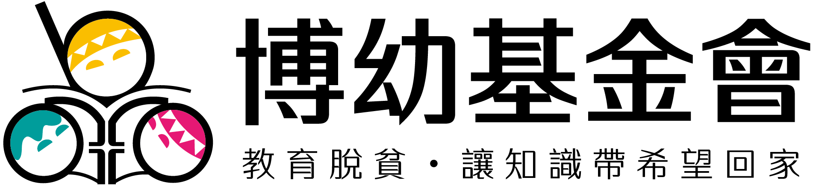
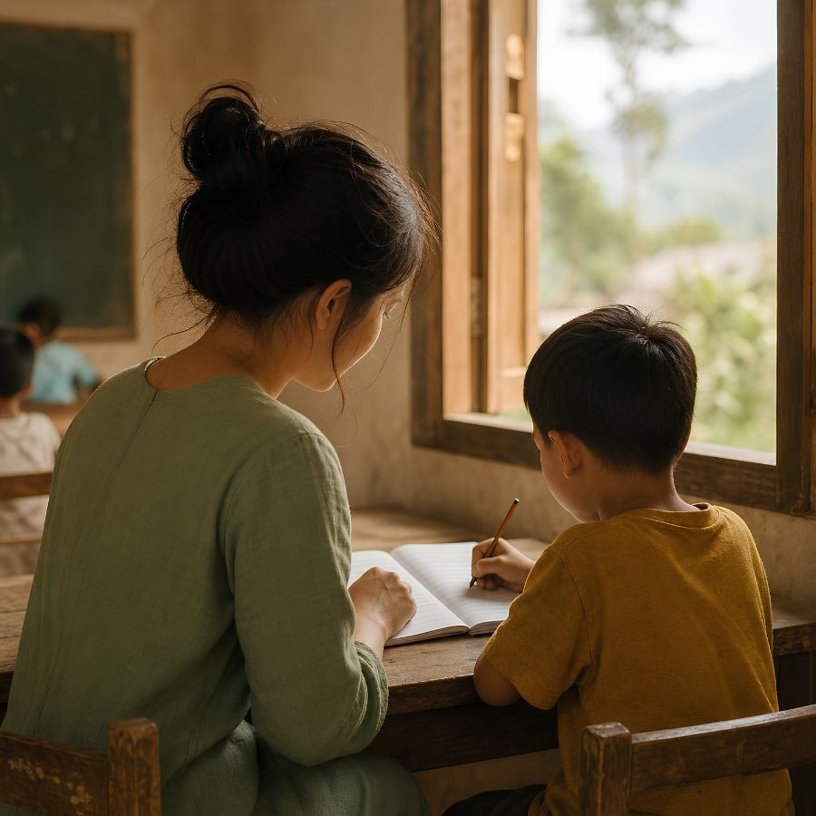

讓知識帶希望回家
Boyo Foundation · Since 2002

張榮華
Jhang Rong-Hua
公共關係組 資深專員｜Public Relations
0直營中心
0服務學生
0追蹤畢業生
「教育脫貧，讓知識帶希望回家」

媒合企業 ESG／CSR 資源與博幼的偏鄉教育需求，洽談長期認養、專案合作或物資贊助。
對接媒體採訪、報導需求，以及基金會對外的公開發言與資訊揭露窗口。
解答定期／單筆捐款方式、扣款異動、收據報稅與捐款用途相關的各項疑問。
「窮困孩子的唯一希望來自教育。我們不做物資救濟，專注長期課業輔導，讓偏鄉孩子具備選擇職業與生活模式的能力。」

不隨學校進度囫圇吞棗。我們為孩子準備專屬的教材，透過「哪裡不會從哪裡教起」的溫柔引導，幫助他們真正掌握基礎學力，重新發現學習的樂趣。
教育不僅是書本上的知識。我們結合專業社工，提供餐食、心理諮商與職涯參訪。我們關心孩子的功課，更在乎他們的心是否被安穩地接住。
每天放學後的免費課輔，建立閱讀、數學與英文的基礎，並提供穩定的晚餐與安全的避風港。
社工深入家庭，協助解決青春期的叛逆與家庭困境，引導孩子發掘興趣，順利銜接高中職升學。
提供高額助學金減輕打工壓力。安排企業參訪與職涯工作坊，讓偏鄉青年敢於對未來懷抱夢想。
持續追蹤輔導至 25 歲，確保孩子具備足夠的競爭力對接社會，真正打破世襲貧窮的循環。
此為 2026.05 取得的客戶確認數據，2026年7月深聊時若有更新版本將替換。
大幅超越弱勢家庭基礎，真正實現階級流動
博幼是非營利基金會，嚴格說沒有「ESG」（ESG是企業自評框架），但博幼對接了 9 項聯合國永續發展目標（SDGs），是企業實踐 ESG／CSR 策略時合適的永續夥伴。左右滑動查看完整指標。
已就業 25 歲以上課輔畢業生平均月薪 36,524 元，協助弱勢家庭脫離世襲貧窮循環。
提供午晚餐與點心補助、食物箱，並規劃營養補充計劃與營養教育課程。
社工輔導關懷學童身心發展，落實防菸、酒、檳榔、毒品教育。
差異化教學、自編補救教材、培訓社區課輔老師，並提供獎助學金與多元人文活動。
開設性別教育課程，培訓部落媽媽成為課輔老師，輔導安置機構少女課業與生活。
提供偏鄉居民就業機會、職業探索與金融理財教育，協助畢業生與安置機構離院生就業。
提供偏鄉弱勢學子免費課輔服務，並將課輔模式移植到外部合作單位。
社工輔導高關懷學生，協助安置機構曝險少年的輔導與陪伴。
泰北大谷地計劃，培訓當地華文老師。
博幼全台共 17 個直營課輔中心，分布北中南東四區。點選分區查看據點地址、電話與地圖，歡迎企業夥伴實地參訪。